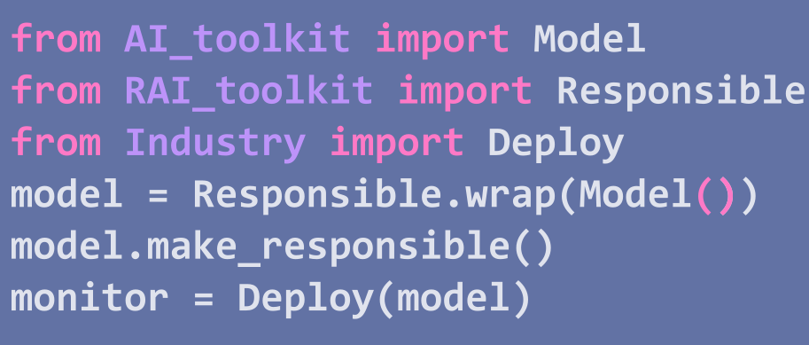

Computing 'responsible AI'
Most of my work as a postdoc has been on the Responsible AI for Value Creation (REPAI) project, where i worked on developing robust thermal object-detection algorithms for long-term deployments for harborfront safety, and the implementation of patients and healthcare workers in the eldercare industry. My work continued at CAISA, however focusing more on the high-level evaluation and compliance level, with evaluation practices and performance assessment, while contributing as a national expert to development of technical standards to support the AI-Act (JTC21).

An oversimplified interface that illustrates that models should be built responsibly, and report information that is context informed and ensure alignment with the systems intended purpose.
Note: a simple python package will never solve this